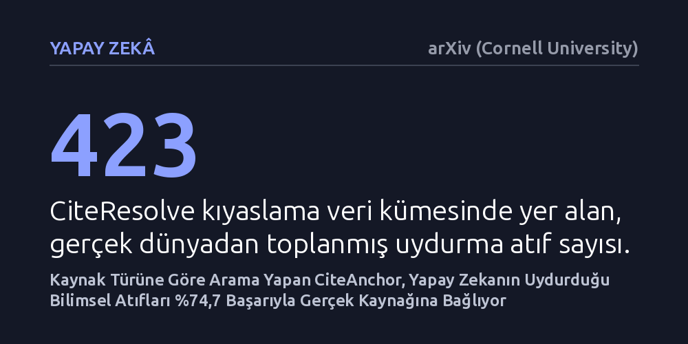

YAPAY-ZEKA · arXiv (Cornell University) · 2026-10-25
Araştırmacılar, yapay zekanın uydurduğu bilimsel atıfları saptayıp gerçek kaynaklarıyla eşleştirmek için CiteAnchor adlı bir yöntem ve CiteResolve veri kümesini geliştirdi. Sistem, kaynak türüne özel doğrulama yaparak uydurma atıfları gerçek kaynaklarına bağlamada web araması temelli yöntemlerden %65 puana kadar daha yüksek başarı gösterdi.
Yapay zekanın uydurduğu akademik referansların tamamen geçersiz sayılması gerekmediği, doğru bir doğrulama yöntemiyle yaklaşık dörtte üçünün arkasındaki asıl bilimsel kaynağın kurtarılabileceği gösterildi.

Büyük dil modelleri bilimsel metinler üretirken veya soruları yanıtlarken son derece ikna edici görünseler de sıklıkla gerçekte var olmayan akademik referanslar uydururlar. Bu durum, bilimsel iddiaların dayandığı kanıtların izini sürmeyi ve araştırmaların güvenilirliğini doğrulamayı ciddi şekilde zorlaştırır. Daha da karmaşığı, modeller bazen tamamen hayali bir çalışma üretmez; gerçek bir yazarın adını başka bir makalenin başlığıyla ya da yanlış bir dergi ve yayın yılıyla birleştirir.
Geleneksel arama motorları ya da basit veri tabanı sorguları bu tür atıfları denetlemekte yetersiz kalmaktadır. Çünkü akademik yayın kayıtları çoğunlukla eksik tutulur; bir önbaskı ile dergide basılmış nihai makale arasında başlık ve yazar farklılıkları bulunabilir. Yüzeysel bir benzerlik araması makul görünen bir eşleşme yakalasa bile, bu eşleşme atfın doğruluğunu kanıtlamadığı gibi modelin gerçekten hangi kaynağa işaret etmek istediğini de çözemez.
Araştırmacılar bu sorunu çözmek amacıyla CiteAnchor adını verdikleri yeni bir doğrulama çerçevesi geliştirdi. CiteAnchor, her bilimsel kaynağa tek tip bir arama yöntemi uygulamak yerine, kaynağın niteliğine (örneğin bir dergi makalesi, konferans bildirisi veya önbaskı oluşuna) göre uyarlanan bir tarama ve alan düzeyinde doğrulama süreci yürütür. Sistem, bir atfın biçimsel geçerliliği ile o atfın tekil bir gerçek kaynağa bağlanıp bağlanamayacağını birbirinden bağımsız olarak değerlendirir.
Yöntemin etkinliğini sınamak için araştırmacılar, gerçek dünyada yapay zekanın ürettiği hatalı referanslardan derlenen 423 örneklik "CiteResolve" adlı yeni bir kıyaslama veri kümesi oluşturdu. Bu veri kümesindeki her uydurma atıf, arkasındaki gerçek kaynağın kurtarılabilir olup olmadığı yönünden titizlikle etiketlendi. CiteAnchor, hem güçlü bir ticari model (GPT-5.6 Luna) hem de açık ağırlıklı bir dil modeli altyapısıyla çalıştırılarak kapsamlı testlere tabi tutuldu.
Mevcut atıf tespit kıyaslamalarında CiteAnchor, GPT-5.6 Luna ile 0,841 F1 skoruna, açık ağırlıklı model ile de 0,784 F1 skoruna ulaştı. Bu sonuçlar, aynı model altyapılarını kullanan temel yöntemlere kıyasla sırasıyla 7,9 ve 36,8 puanlık belirgin bir iyileşmeye karşılık gelmektedir. Özellikle açık kaynaklı modeldeki 36,8 puanlık sıçrama, yöntemin model mimarisinden bağımsız bir doğrulama disiplini getirdiğini göstermektedir.
Araştırmacıların geliştirdiği CiteResolve testinde ise CiteAnchor, uydurma atıfların gerçek kaynaklarını saptamada GPT-5.6 Luna ile %74,7, açık ağırlıklı modelle ise %70,7 uçtan uca başarı sağladı. Standart web araması tabanlı yöntemlerle kıyaslandığında bu oranlar, sırasıyla 16,3 ve 65,3 yüzdelik puan daha yüksek bir performansı temsil etmektedir. Böylece yapay zekanın parçalayıp bozduğu atıfların yaklaşık dörtte üçünün doğru kaynağına geri döndürülebileceği kanıtlanmış oldu.
Bu bulgular, yapay zekanın ürettiği hatalı veya uydurma atıfların otomatik olarak geçersiz sayılarak gözden çıkarılması gerekmediğini ortaya koyuyor. Çoğu durumda yapay zeka modeli gerçek bir bilimsel kaynaktaki bulguyu hatırlamakta, ancak bunu metne dökerken bibliyografik detayları birbirine karıştırmaktadır. Kaynağın türünü hesaba katan akıllı bir eşleştirme mantığı, kaybolduğu sanılan kanıt zincirini yeniden kurabilmektedir.
Bununla birlikte, yöntemin başarısı bibliyografik veri tabanlarının zenginliği ve modelin erişebildiği kayıt kalitesiyle doğrudan ilişkilidir. Sistemin açık ağırlıklı modellerde dahi %70'in üzerinde başarı yakalaması, gelecekte akademik yayıncılıkta ve yapay zeka destekli araştırma asistanlarında harici bir denetim mekanizması olarak kullanılabileceğine işaret etmektedir.